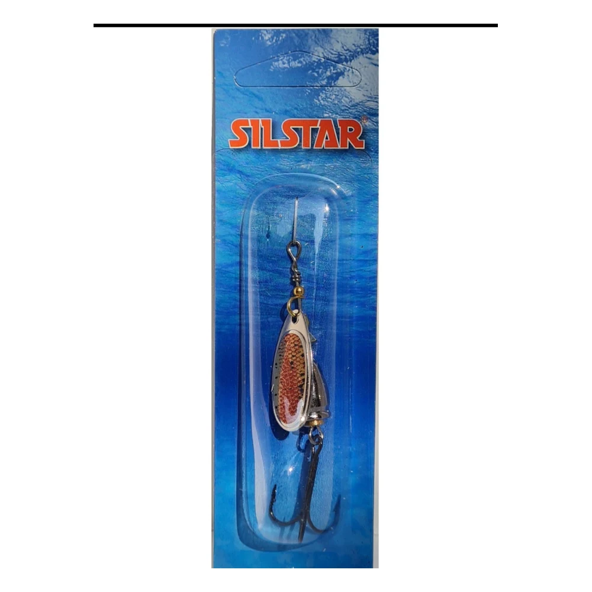

Pesca / Spinners Silstar
Silstar Fiber Acoustic Trucha N°2 5 g
$3.700
Spinner acústico con cuerpo que emite sonido al trabajar, ideal para provocar ataques por vibración, destello y color.
MarcaSilstar
TipoSpinner
TamañoN°2
Peso5 g

Spinner acústico con cuerpo que emite sonido al trabajar, ideal para provocar ataques por vibración, destello y color.